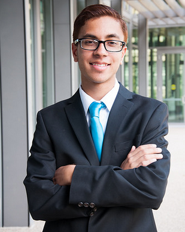

Saransh Gupta's Personal Website

607 Green Hollow Drive Iselin, New Jersey, 08830 732-538-0381 saranshgupta32@gmail.com
WORK EXPERIENCE
SquadGoalsFit, Cambridge, MA
Cofounder, CTO and CFO July 2015 - September 2015
- Worked with other CTO’s to achieve an airtight build plan
- Worked with other CFO’s to ensure airtight 5-year revenue projections, and financial statements concerning different target markets
- Looked, read, and interviewed those who want to create the IOS side of the app
- Gave a presentation for practice of the company in front of a Venture Capital Firm
- Our Website
BlueStamp Engineering , Manhattan, NY
Student/Intern July 2014 - August 2014
- Continually debugged and corrected errors to ensure that the desired results are produced
- Drew schematic views to depict functional relationships of electrical components and physical assemblies
- Designed a fully functional Omni-Directional robot that could move in any direction relative to a center point
- Made and documented robotic application development, maintenance, or changes made everyday in a digital engineering notebook, as well as maintaining a blog.
- Designed scale or full-size blueprints of specialty items such as 3-D printed parts
- Gained enormous experience with a 3D printer
- Made CAD(Computer Aided Design) for planning engineering projects beforehand to foresee any problems the placement of hardware, and possible problems
Sakkhi, Iselin, NJ
Student/Intern June 2011 - June 2013
- Posted flyers around areas
- Digitally adverted Sakkhi
- Figured out ways to better sell a product or market the young company
EDUCATION
John F. Kennedy Memorial High School, Iselin, NJ
Expected graduation, Jun 20th, 2017
- 2nd Vice President of FBLA (Future Business Leaders of America)
- Vice President of Computer Science Club
- Currently working on an mobile application for viewing grades for the school
- 95th Percentile in Biology (A)
- 98th Percentile in Chemistry (A+)
- Finished Precalc and currently taking Calc AB
ADDITIONAL SKILLS
- Experienced in Bollywood and Hip Hop dancing for 10 years
- Coded in XML, Java, Swift, and 3 C-Based languages for robotics implementation not so much digital applications
- Used CAD software to foresee any hardware problems and advanced proficient 3-D printing
- Fluent in Hindi, lived in India for 4 years
- Reverse engineering several SDK's to get certain bits of info such as the Myo SDK and debugging
- Mobile App Development Experience
- Knowledgeable about Windows 10